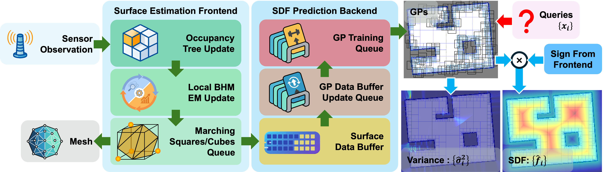

Overview

Our method consists of a surface estimation front-end and an SDF prediction back-end. The front-end
estimates surface points and normals from sensor observations using Bayesian Hilbert Map (BHM) and
marching squares/cubes algorithm. The estimated surface points are then used as training data for
the
GPs in the back-end. The back-end learns the SDF using multiple GPs, which predict the SDF and its
gradient with uncertainty quantification computed via softmin-based fusion.